Stress eating helps, when they're these superfoods
By Lindsay Funston, Health.com
Updated 2326 GMT (0626 HKT) April 13, 2015
Pistachios – Focusing on the negative? A repetitive task like shelling pistachios is relaxing. These nuts can also lower your blood pressure and heart rate.
Hide Caption
7 of 12
<img alt="Craving carbohydrates when you&amp;#39;re stressed? Reach for oatmeal rather than a doughnut. It can help your brain produce serotonin without adding a spike to your blood sugar." class="media__image" src="http://i2.cdn.turner.com/cnnnext/dam/assets/150410161558-07-stress-relieving-superfoods-0410-super-169.jpg">
Stress-relieving superfoods 12 photos
Oatmeal – Craving carbohydrates when you're stressed? Reach for oatmeal rather than a doughnut. It can help your brain produce serotonin without adding a spike to your blood sugar.
Hide Caption
8 of 12
<img alt="Stress comes with its added hormones of adrenaline and cortisol, but the anti-inflammatory properties in salmon can counteract those negative effects." class="media__image" src="http://i2.cdn.turner.com/cnnnext/dam/assets/150410161736-08-stress-relieving-superfoods-0410-super-169.jpg">
Stress-relieving superfoods 12 photos
Salmon – Stress comes with its added hormones of adrenaline and cortisol, but the anti-inflammatory properties in salmon can counteract those negative effects.
Hide Caption
9 of 12
<img alt="Avocado is filling and satisfying, which helps shut down your stress-eating impulse. " class="media__image" src="http://i2.cdn.turner.com/cnnnext/dam/assets/150410162044-09-stress-relieving-superfoods-0410-super-169.jpg">
Stress-relieving superfoods 12 photos
Avocado – Avocado is filling and satisfying, which helps shut down your stress-eating impulse.
Hide Caption
10 of 12
<img alt="Does your stress go along with an upset stomach, or vice versa? The probiotics in yogurt can help. " class="media__image" src="http://i2.cdn.turner.com/cnnnext/dam/assets/150410162420-10-stress-relieving-superfoods-0410-super-169.jpg">
Stress-relieving superfoods 12 photos
Yogurt – Does your stress go along with an upset stomach, or vice versa? The probiotics in yogurt can help.
Hide Caption
11 of 12
<img alt="If chocolate is your go-to when you&amp;#39;re stressed, consider having a calming bite of dark chocolate. The antioxidants can lower your blood pressure and its unique substances can actually create a sense of euphoria. " class="media__image" src="http://i2.cdn.turner.com/cnnnext/dam/assets/150410162525-11-stress-relieving-superfoods-0410-super-169.jpg">
Stress-relieving superfoods 12 photos
Dark chocolate – If chocolate is your go-to when you're stressed, consider having a calming bite of dark chocolate. The antioxidants can lower your blood pressure and its unique substances can actually create a sense of euphoria.
Hide Caption
12 of 12
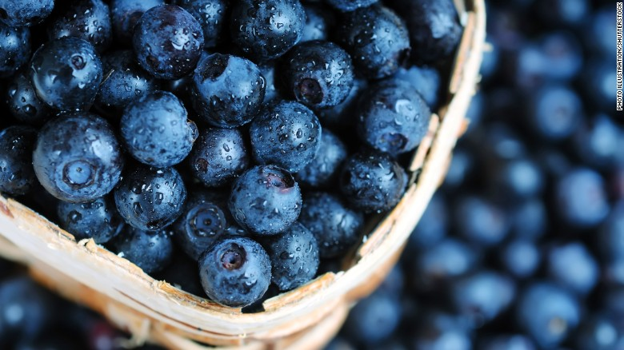
<img alt="Blueberries contain antioxidants that improve your reaction to stress, so if you&#39;re feeling the pressure, grab some of these. Click through our gallery to see other foods that help reduce stress." class="media__image" src="http://i2.cdn.turner.com/cnnnext/dam/assets/150410160246-01-stress-relieving-superfoods-0410-super-169.jpg">
Stress-relieving superfoods 12 photos
Blueberries – Blueberries contain antioxidants that improve your reaction to stress, so if you're feeling the pressure, grab some of these. Click through our gallery to see other foods that help reduce stress.
Hide Caption
1 of 12
<img alt="Pumpkin seeds, as well as flaxseed and sunflower seeds, contain magnesium, which is known to alleviate depression, fatigue and irritability -- all side effects of stress." class="media__image" src="http://i2.cdn.turner.com/cnnnext/dam/assets/150410160737-02-stress-relieving-superfoods-0410-super-169.jpg">
Stress-relieving superfoods 12 photos
Seeds – Pumpkin seeds, as well as flaxseed and sunflower seeds, contain magnesium, which is known to alleviate depression, fatigue and irritability -- all side effects of stress.
Hide Caption
2 of 12
<img alt="Cashews contain zinc, which could help in reducing your anxiety. " class="media__image" src="http://i2.cdn.turner.com/cnnnext/dam/assets/150410162837-12-stress-relieving-superfoods-0410-super-169.jpg">
Stress-relieving superfoods 12 photos
Cashews – Cashews contain zinc, which could help in reducing your anxiety.
Hide Caption
3 of 12
<img alt="While the tryptophan in turkey is known to make you sleepy, it also helps the body produce serotonin, which contributes to a happy mood. It can also have a calming effect." class="media__image" src="http://i2.cdn.turner.com/cnnnext/dam/assets/150410160849-03-stress-relieving-superfoods-0410-super-169.jpg">
Stress-relieving superfoods 12 photos
Turkey – While the tryptophan in turkey is known to make you sleepy, it also helps the body produce serotonin, which contributes to a happy mood. It can also have a calming effect.
Hide Caption
4 of 12
<img alt="Spinach and other green leafy vegetables contain folate, which produces dopamine in your brain. This pleasure-inducing chemical helps you maintain your sense of calm. " class="media__image" src="http://i2.cdn.turner.com/cnnnext/dam/assets/150410161007-04-stress-relieving-superfoods-0410-super-169.jpg">
Stress-relieving superfoods 12 photos
Spinach – Spinach and other green leafy vegetables contain folate, which produces dopamine in your brain. This pleasure-inducing chemical helps you maintain your sense of calm.
Hide Caption
5 of 12
<img alt="Milk that has been fortified with vitamin D can boost your happiness. It has also been known to reduce panic disorders." class="media__image" src="http://i2.cdn.turner.com/cnnnext/dam/assets/150410161259-05-stress-relieving-superfoods-0410-super-169.jpg">
Stress-relieving superfoods 12 photos
Milk – Milk that has been fortified with vitamin D can boost your happiness. It has also been known to reduce panic disorders.
Hide Caption
6 of 12
<img alt="Focusing on the negative? A repetitive task like shelling pistachios is relaxing. These nuts can also lower your blood pressure and heart rate. " class="media__image" src="http://i2.cdn.turner.com/cnnnext/dam/assets/150410161445-06-stress-relieving-superfoods-0410-super-169.jpg">
Stress-relieving superfoods 12 photos
Pistachios – Focusing on the negative? A repetitive task like shelling pistachios is relaxing. These nuts can also lower your blood pressure and heart rate.
Hide Caption
7 of 12
<img alt="Craving carbohydrates when you&#39;re stressed? Reach for oatmeal rather than a doughnut. It can help your brain produce serotonin without adding a spike to your blood sugar." class="media__image" src="http://i2.cdn.turner.com/cnnnext/dam/assets/150410161558-07-stress-relieving-superfoods-0410-super-169.jpg">
Stress-relieving superfoods 12 photos
Oatmeal – Craving carbohydrates when you're stressed? Reach for oatmeal rather than a doughnut. It can help your brain produce serotonin without adding a spike to your blood sugar.
Hide Caption
8 of 12
<img alt="Stress comes with its added hormones of adrenaline and cortisol, but the anti-inflammatory properties in salmon can counteract those negative effects." class="media__image" src="http://i2.cdn.turner.com/cnnnext/dam/assets/150410161736-08-stress-relieving-superfoods-0410-super-169.jpg">
Stress-relieving superfoods 12 photos
Salmon – Stress comes with its added hormones of adrenaline and cortisol, but the anti-inflammatory properties in salmon can counteract those negative effects.
Hide Caption
9 of 12
<img alt="Avocado is filling and satisfying, which helps shut down your stress-eating impulse. " class="media__image" src="http://i2.cdn.turner.com/cnnnext/dam/assets/150410162044-09-stress-relieving-superfoods-0410-super-169.jpg">
Stress-relieving superfoods 12 photos
Avocado – Avocado is filling and satisfying, which helps shut down your stress-eating impulse.
Hide Caption
10 of 12
<img alt="Does your stress go along with an upset stomach, or vice versa? The probiotics in yogurt can help. " class="media__image" src="http://i2.cdn.turner.com/cnnnext/dam/assets/150410162420-10-stress-relieving-superfoods-0410-super-169.jpg">
Stress-relieving superfoods 12 photos
Yogurt – Does your stress go along with an upset stomach, or vice versa? The probiotics in yogurt can help.
Hide Caption
11 of 12
<img alt="If chocolate is your go-to when you&#39;re stressed, consider having a calming bite of dark chocolate. The antioxidants can lower your blood pressure and its unique substances can actually create a sense of euphoria. " class="media__image" src="http://i2.cdn.turner.com/cnnnext/dam/assets/150410162525-11-stress-relieving-superfoods-0410-super-169.jpg">
Stress-relieving superfoods 12 photos
Dark chocolate – If chocolate is your go-to when you're stressed, consider having a calming bite of dark chocolate. The antioxidants can lower your blood pressure and its unique substances can actually create a sense of euphoria.
Hide Caption
12 of 12
<img alt="Blueberries contain antioxidants that improve your reaction to stress, so if you&amp;#39;re feeling the pressure, grab some of these. Click through our gallery to see other foods that help reduce stress." class="media__image" src="http://i2.cdn.turner.com/cnnnext/dam/assets/150410160246-01-stress-relieving-superfoods-0410-super-169.jpg">
Stress-relieving superfoods 12 photos
Blueberries – Blueberries contain antioxidants that improve your reaction to stress, so if you're feeling the pressure, grab some of these. Click through our gallery to see other foods that help reduce stress.
Hide Caption
1 of 12
<img alt="Pumpkin seeds, as well as flaxseed and sunflower seeds, contain magnesium, which is known to alleviate depression, fatigue and irritability -- all side effects of stress." class="media__image" src="http://i2.cdn.turner.com/cnnnext/dam/assets/150410160737-02-stress-relieving-superfoods-0410-super-169.jpg">
Stress-relieving superfoods 12 photos
Seeds – Pumpkin seeds, as well as flaxseed and sunflower seeds, contain magnesium, which is known to alleviate depression, fatigue and irritability -- all side effects of stress.
Hide Caption
2 of 12
<img alt="Cashews contain zinc, which could help in reducing your anxiety. " class="media__image" src="http://i2.cdn.turner.com/cnnnext/dam/assets/150410162837-12-stress-relieving-superfoods-0410-super-169.jpg">
Stress-relieving superfoods 12 photos
Cashews – Cashews contain zinc, which could help in reducing your anxiety.
Hide Caption
3 of 12
<img alt="While the tryptophan in turkey is known to make you sleepy, it also helps the body produce serotonin, which contributes to a happy mood. It can also have a calming effect." class="media__image" src="http://i2.cdn.turner.com/cnnnext/dam/assets/150410160849-03-stress-relieving-superfoods-0410-super-169.jpg">
Stress-relieving superfoods 12 photos
Turkey – While the tryptophan in turkey is known to make you sleepy, it also helps the body produce serotonin, which contributes to a happy mood. It can also have a calming effect.
Hide Caption
4 of 12
<img alt="Spinach and other green leafy vegetables contain folate, which produces dopamine in your brain. This pleasure-inducing chemical helps you maintain your sense of calm. " class="media__image" src="http://i2.cdn.turner.com/cnnnext/dam/assets/150410161007-04-stress-relieving-superfoods-0410-super-169.jpg">
Stress-relieving superfoods 12 photos
Spinach – Spinach and other green leafy vegetables contain folate, which produces dopamine in your brain. This pleasure-inducing chemical helps you maintain your sense of calm.
Hide Caption
5 of 12
<img alt="Milk that has been fortified with vitamin D can boost your happiness. It has also been known to reduce panic disorders." class="media__image" src="http://i2.cdn.turner.com/cnnnext/dam/assets/150410161259-05-stress-relieving-superfoods-0410-super-169.jpg">
Stress-relieving superfoods 12 photos
Milk – Milk that has been fortified with vitamin D can boost your happiness. It has also been known to reduce panic disorders.
Hide Caption
6 of 12
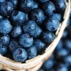
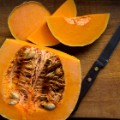
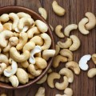
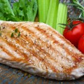
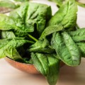
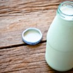
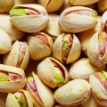
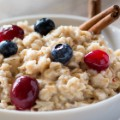
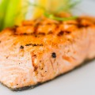
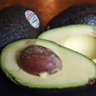
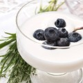
Story highlights
(CNN)When work deadlines begin piling up and your social calendar is booked, the last thing you want to hear is to steer clear of the vending machine. Who has time for healthy eating? But when it comes to combating stress levels, what you eat may actually help relieve your tension. Indeed, some foods may help stabilize blood sugar or, better yet, your emotional response. Here, 12 foods to reach for when you've just about had enough.
Green leafy vegetables
It's tempting to reach for a cheeseburger when stressed, but go green at lunch instead. "Green leafy vegetables like spinach contain folate, which produces dopamine, a pleasure-inducing brain chemical, helping you keep calm," says Heather Mangieri, RDN, a spokesperson for the Academy of Nutrition and Dietetics. A 2012 study in the Journal of Affective Disorders of 2,800 middle-aged and elderly people and found those who consumed the most folate had a lower risk of depression symptoms than those who took in the least. And, a 2013 study from the University of Otago found that college students tended to feel calmer, happier, and more energetic on days they ate more fruits and veggies. It can be hard to tell which came first—upbeat thoughts or healthy eating—but the researchers found that healthy eating seemed to predict a positive mood the next day.
RELATED: 13 healthy kale recipes
Turkey breast
You've probably heard that the tryptophan in turkey is to blame for that food coma on Thanksgiving. The amino acid, found in protein-containing foods, helps produce serotonin, "the chemical that regulates hunger and feelings of happiness and well-being," Mangieri says. On its own, tryptophan may have a calming effect. In a 2006 study published in the Journal of Psychiatry Neuroscience, men and women who were argumentative (based on personality tests) took either tryptophan supplements or a placebo for 15 days. Those who took tryptophan were perceived as more agreeable by their study partners at the end of the two weeks compared with when they didn't take it. (The study was funded by the Canadian Institutes of Health Research.) Other foods high in tryptophan include nuts, seeds, tofu, fish, lentils, oats, beans, and eggs.
Oatmeal
If you're already a carb lover, it's likely that nothing can come between you and a doughnut when stress hits. First rule of thumb: Don't completely deny the craving. According to MIT research, carbohydrates can help the brain make serotonin, the same substance regulated by antidepressants. But instead of reaching for that sugary bear claw, go for complex carbs. "Stress can cause your blood sugar to rise, Mangieri says, "so a complex carb like oatmeal won't contribute to your already potential spike in blood glucose."
RELATED: 18 health benefits of whole grains
Yogurt
As bizarre as it may sound, the bacteria in your gut might be contributing to stress. Research has shown that the brain signals to the gut, which is why stress can inflame gastrointestinal symptoms; communication may flow the other way too, from gut to brain. A 2013 UCLA study among 36 healthy women revealed that consuming probiotics in yogurt reduced brain activity in areas that handle emotion, including stress compared to people who consumed yogurt without probiotics or no yogurt at all. This study was small so more research is needed to confirm the results—but considering yogurt is full of calcium and protein in addition to probiotics, you really can't go wrong by adding more of it to your diet.
Salmon
When you're stressed, it can ratchet up anxiety hormones, such as adrenaline and cortisol. "The omega-3 fatty acids in salmon haveanti-inflammatory properties that may help counteract the negative effects of stress hormones," says Lisa Cimperman, RD, of the University Hospitals Case Medical Center and a spokesperson for the Academy of Nutrition and Dietetics. In a study funded by the National Institutes of Health, Oregon State University medical students who took omega-3 supplements had a 20% reduction in anxiety compared to the group given placebo pills. One 3-ounce serving of cooked wild salmon can have more than 2,000 milligrams of omega-3s, double the daily intake recommended by the American Heart Association for people with heart disease.
Blueberries
"When you're stressed, there's a battle being fought inside you," Mangieri says. "The antioxidants and phytonutrients found in berries fight in your defense, helping improve your body's response to stress and fight stress-related free radicals." Research has also shown that blueberry eaters experience a boost in natural killer cells, "a type of white blood cell that plays a vital role in immunity, critical for countering stress," says Cynthia Sass, MPH, RD, Health's contributing nutrition editor.
Pistachios
When you have an ongoing loop of negative thoughts playing in your mind, doing something repetitive with your hands may help silence your inner monologue. Think knitting or kneading bread—or even shelling nuts like pistachios or peanuts. The rhythmic moves will help you relax. Plus, the added step of cracking open a shell slows down your eating, making pistachios a diet-friendly snack. What's more, pistachios have heart-health benefits. "Eating pistachios may reduce acute stress by lowering blood pressure and heart rate," Mangieri says. "The nuts contain key phytonutrients that may provide antioxidant support for cardiovascular health."
Dark chocolate
Calling all chocoholics: a regular healthy indulgence (just a bite, not a whole bar!) of dark chocolate might have the power to regulate your stress levels. "Research has shown that it can reduce your stress hormones, including cortisol," Sass says. "Also, the antioxidants in cocoa trigger the walls of your blood vessels to relax, lowering blood pressure and improving circulation. And finally, dark chocolate contains unique natural substances that create a sense of euphoria similar to the feeling of being in love!" Go for varieties that contain at least 70% cocoa.
Milk
Fortified milk is an excellent source of vitamin D, a nutrient that might boost happiness. A 50-year-long study by London's UCL Institute of Child Health found an association between reduced levels of vitamin D and an increased risk of panic and depression among 5,966 men and women. People who had sufficient vitamin D levels had a reduced risk of panic disorders compared to subjects with the lowest levels of vitamin D. Other foods high in vitamin D include salmon, egg yolks, and fortified cereal.
RELATED: 12 ways to get your daily Vitamin D
Seeds
Flaxseed, pumpkin seeds, and sunflower seeds are all great sources of magnesium (as are leafy greens, yogurt, nuts, and fish). Loading up on the mineral may help regulate emotions. "Magnesium has been shown to help alleviate depression, fatigue, and irritability," Sass says. "Bonus: When you're feeling especially irritable during that time of the month, the mineral also helps to fight PMS symptoms, including cramps and water retention."
Avocado
You can't just reach for slice after slice of avocado toast during crunch time if you don't want to gain weight, but this superfruit might help shut down stress-eating by filling your belly and making you feel more satisfied. In a 2014 study by Loma Linda University (which, full disclosure, was sponsored by the Hass Avocado Board), researchers had participants add half an avocado to their lunches, which reduced their desire to eat more by 40% for the three hours following the midday meal. That full feeling will make you less inclined to reach for unhealthy snacks when stress kicks in.
RELATED: 8 avocado recipes (besides guacamole)
Cashews
One ounce of the buttery nut packs 11% of the daily recommended value of zinc, an essential mineral that may help reduce anxiety. When researchers gave zinc supplements to people who were diagnosed with both anxiety symptoms (irritability, lack of ability to concentrate) and deficient zinc levels over a course of eight weeks, the patients saw a 31% decrease in anxiety, according to Nutrition and Metabolic Insights. This is likely because zinc affects the levels of a nerve chemical that influences mood. If you're already getting enough zinc, then it may not help your mood to chow down on cashews (or other zinc-rich foods like oysters, beef, chicken, and yogurt). But, cashews are also rich in omega-3s and protein, so they're a smart snack no matter what.
This article originally appeared on Health.com.
JUST WATCHED
Ind. governor: HIV outbreak a 'very serious situation'
Replay
MUST WATCH
(18)
<img alt="text neck technology pain sanjay gupta orig mg _00021308.jpg" class="media__image" src="http://i2.cdn.turner.com/cnnnext/dam/assets/150113175714-text-neck-technology-pain-sanjay-gupta-orig-mg-00021308-large-169.jpg">
Is your smartphone bad for you?
<img alt="dnt penile enlargement procdecure_00002017" class="media__image" src="http://i2.cdn.turner.com/cnnnext/dam/assets/120713052747-dnt-penile-enlargement-procdecure-00002017-story-top.jpg">
2012: New technique for penis enhancement
<img alt="nr vaccinations_00005114.jpg" class="media__image" src="http://i2.cdn.turner.com/cnnnext/dam/assets/150122155130-nr-vaccinations-00005114-large-169.jpg">
Unvaccinated kids pose health threat?
<img alt="dnt denver respiratory illness_00010920.jpg" class="media__image" src="http://i2.cdn.turner.com/cnnnext/dam/assets/140906160548-dnt-denver-respiratory-illness-00010920-story-top.jpg">
How to tell if your child is sick
<img alt="erin foreman how does measles spread_00003409.jpg" class="media__image" src="http://i2.cdn.turner.com/cnnnext/dam/assets/150130192847-erin-foreman-how-does-measles-spread-00003409-large-169.jpg">
Sneeze on a plane: A chance of getting the measles
<img alt="" class="media__image" src="http://i2.cdn.turner.com/cnnnext/dam/assets/141231095626-predict-flu-2-story-top.jpg">
Know when and where the flu will hit
<img alt="dnt crest toothpaste change plastic microbeads_00000702.jpg" class="media__image" src="http://i2.cdn.turner.com/cnnnext/dam/assets/140916232941-dnt-crest-toothpaste-change-plastic-microbeads-00000702-story-top.jpg">
Is that plastic on your teeth?
<img alt="" class="media__image" src="http://i2.cdn.turner.com/cnnnext/dam/assets/150217102927-freezing-for-fitness-large-169.png">
Fitness craze: Undergoing temps of -220F
<img alt="ctn pkg lah californias wealthiest anti vaccine _00023513.jpg" class="media__image" src="http://i2.cdn.turner.com/cnnnext/dam/assets/141002223855-ctn-pkg-lah-californias-wealthiest-anti-vaccine-00023513-story-top.jpg">
L.A.: Where the rich don't vaccinate
<img alt="dnt in hiv outbreak governor_00004307.jpg" class="media__image" src="http://i2.cdn.turner.com/cnnnext/dam/assets/150327034304-dnt-in-hiv-outbreak-governor-00004307-large-169.jpg">
Ind. governor: HIV outbreak a 'very serious situation'
<img alt="NEW YORK, NY - FEBRUARY 15: Dr. Oz attends the 2012 &quot;Woman&#39;s Day&quot; Red Dress Awards at Jazz at Lincoln Center on February 15, 2012 in New York City. (Photo by Brad Barket/Getty Images)" class="media__image" src="http://i2.cdn.turner.com/cnnnext/dam/assets/130320191718-dr-mehmet-oz-story-top.jpg">
Medical peers want Dr. Oz fired, call him 'a quack'
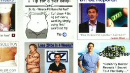
<img alt="erin dnt cohen dr oz weight loss hearing_00005730.jpg" class="media__image" src="http://i2.cdn.turner.com/cnnnext/dam/assets/140617201524-erin-dnt-cohen-dr-oz-weight-loss-hearing-00005730-story-top.jpg">
Dr. Oz criticized for 'quack treatments'
<img alt="" class="media__image" src="http://i2.cdn.turner.com/cnnnext/dam/assets/150404114350-feds-say-pesticide-suspected-in-family-illness-terminix-large-169.png">
What can you do to prevent pesticide poisoning?
<img alt="dnt judge orders man stop smoking own home_00000110.jpg" class="media__image" src="http://i2.cdn.turner.com/cnnnext/dam/assets/150310064739-dnt-judge-orders-man-stop-smoking-own-home-00000110-large-169.jpg">
Judge orders man to stop smoking in his own home
<img alt="orig added sugar sanjay gupta calories food_00002424.jpg" class="media__image" src="http://i2.cdn.turner.com/cnnnext/dam/assets/150310185258-orig-added-sugar-sanjay-gupta-calories-food-00002424-large-169.jpg">
Where is sugar hiding?
<img alt="" class="media__image" src="http://i2.cdn.turner.com/cnnnext/dam/assets/141231095513-predict-flu-1-story-top.jpg">
Two big flu myths debunked
<img alt="" class="media__image" src="http://i2.cdn.turner.com/cnnnext/dam/assets/150203163411-pregant-woman-rg1-large-169.jpg">
5 myths about getting pregnant
<img alt="Scan Of The Brain Of A Patient Affected By Alzheimer&#39;s Disease Axial Section. Intersections Of Lateral Ventricles Are Dilated. (Photo By BSIP/UIG/Getty Images)" class="media__image" src="http://i2.cdn.turner.com/cnnnext/dam/assets/140318154551-alzheimers-0317-story-top.jpg">
Could smell test detect Alzheimer's?
<img alt="text neck technology pain sanjay gupta orig mg _00021308.jpg" class="media__image" src="http://i2.cdn.turner.com/cnnnext/dam/assets/150113175714-text-neck-technology-pain-sanjay-gupta-orig-mg-00021308-large-169.jpg">
Is your smartphone bad for you?
<img alt="dnt penile enlargement procdecure_00002017" class="media__image" src="http://i2.cdn.turner.com/cnnnext/dam/assets/120713052747-dnt-penile-enlargement-procdecure-00002017-story-top.jpg">
2012: New technique for penis enhancement
<img alt="nr vaccinations_00005114.jpg" class="media__image" src="http://i2.cdn.turner.com/cnnnext/dam/assets/150122155130-nr-vaccinations-00005114-large-169.jpg">
Unvaccinated kids pose health threat?
<img alt="dnt denver respiratory illness_00010920.jpg" class="media__image" src="http://i2.cdn.turner.com/cnnnext/dam/assets/140906160548-dnt-denver-respiratory-illness-00010920-story-top.jpg">
How to tell if your child is sick
<img alt="erin foreman how does measles spread_00003409.jpg" class="media__image" src="http://i2.cdn.turner.com/cnnnext/dam/assets/150130192847-erin-foreman-how-does-measles-spread-00003409-large-169.jpg">
Sneeze on a plane: A chance of getting the measles
<img alt="" class="media__image" src="http://i2.cdn.turner.com/cnnnext/dam/assets/141231095626-predict-flu-2-story-top.jpg">
Know when and where the flu will hit
<img alt="dnt crest toothpaste change plastic microbeads_00000702.jpg" class="media__image" src="http://i2.cdn.turner.com/cnnnext/dam/assets/140916232941-dnt-crest-toothpaste-change-plastic-microbeads-00000702-story-top.jpg">
Is that plastic on your teeth?
<img alt="" class="media__image" src="http://i2.cdn.turner.com/cnnnext/dam/assets/150217102927-freezing-for-fitness-large-169.png">
Fitness craze: Undergoing temps of -220F
<img alt="ctn pkg lah californias wealthiest anti vaccine _00023513.jpg" class="media__image" src="http://i2.cdn.turner.com/cnnnext/dam/assets/141002223855-ctn-pkg-lah-californias-wealthiest-anti-vaccine-00023513-story-top.jpg">
L.A.: Where the rich don't vaccinate
<img alt="dnt in hiv outbreak governor_00004307.jpg" class="media__image" src="http://i2.cdn.turner.com/cnnnext/dam/assets/150327034304-dnt-in-hiv-outbreak-governor-00004307-large-169.jpg">
Ind. governor: HIV outbreak a 'very serious situation'
<img alt="NEW YORK, NY - FEBRUARY 15: Dr. Oz attends the 2012 &amp;quot;Woman&amp;#39;s Day&amp;quot; Red Dress Awards at Jazz at Lincoln Center on February 15, 2012 in New York City. (Photo by Brad Barket/Getty Images)" class="media__image" src="http://i2.cdn.turner.com/cnnnext/dam/assets/130320191718-dr-mehmet-oz-story-top.jpg">
Medical peers want Dr. Oz fired, call him 'a quack'
<img alt="erin dnt cohen dr oz weight loss hearing_00005730.jpg" class="media__image" src="http://i2.cdn.turner.com/cnnnext/dam/assets/140617201524-erin-dnt-cohen-dr-oz-weight-loss-hearing-00005730-story-top.jpg">
Dr. Oz criticized for 'quack treatments'
<img alt="" class="media__image" src="http://i2.cdn.turner.com/cnnnext/dam/assets/150404114350-feds-say-pesticide-suspected-in-family-illness-terminix-large-169.png">
What can you do to prevent pesticide poisoning?
<img alt="dnt judge orders man stop smoking own home_00000110.jpg" class="media__image" src="http://i2.cdn.turner.com/cnnnext/dam/assets/150310064739-dnt-judge-orders-man-stop-smoking-own-home-00000110-large-169.jpg">
Judge orders man to stop smoking in his own home
<img alt="orig added sugar sanjay gupta calories food_00002424.jpg" class="media__image" src="http://i2.cdn.turner.com/cnnnext/dam/assets/150310185258-orig-added-sugar-sanjay-gupta-calories-food-00002424-large-169.jpg">
Where is sugar hiding?
<img alt="" class="media__image" src="http://i2.cdn.turner.com/cnnnext/dam/assets/141231095513-predict-flu-1-story-top.jpg">
Two big flu myths debunked
<img alt="" class="media__image" src="http://i2.cdn.turner.com/cnnnext/dam/assets/150203163411-pregant-woman-rg1-large-169.jpg">
5 myths about getting pregnant
<img alt="Scan Of The Brain Of A Patient Affected By Alzheimer&amp;#39;s Disease Axial Section. Intersections Of Lateral Ventricles Are Dilated. (Photo By BSIP/UIG/Getty Images)" class="media__image" src="http://i2.cdn.turner.com/cnnnext/dam/assets/140318154551-alzheimers-0317-story-top.jpg">
Could smell test detect Alzheimer's?
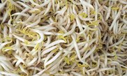
10 Amazing Foods That Can Speed Up Weight Loss (LOLWOT)
What's Wrong With All Those Little Newborns? (OZY)
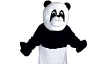
6 Fun Dream Jobs That Really Pay Well (Techlays.com)
Honda tries for comeback- Automaker hopes to regain lost… (Nikkei Asian Review) More From CNN
Stop drinking soda, for (your own) good
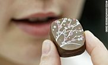
One-minute solutions to improving your health
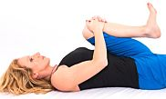
Sleep better with six minutes of bedtime yoga
Maps reveal the bacteria and chemicals lurking on skin Recommended by
Focus on Health
<img alt="Dark chocolate shavings" class="media__image" src="http://i2.cdn.turner.com/cnnnext/dam/assets/150410162525-11-stress-relieving-superfoods-0410-large-169.jpg">You can stress-eat these superfoods
<img alt="your brain on multitasking Gupta orig_00001823.jpg" class="media__image" src="http://i2.cdn.turner.com/cnnnext/dam/assets/150408171435-your-brain-on-multitasking-gupta-orig-00001823-large-169.jpg">Your brain on multitasking
<img alt="Commuters stuck in traffic on the Kennedy Expressway in Chicago on November, 27, 2013. Recent studies show how you commute to work can affect your health. The length of your car commute is tied to elevated blood pressure. " class="media__image" src="http://i2.cdn.turner.com/cnnnext/dam/assets/150403155420-01-commute-health-large-169.jpg">Why your commute is bad for you
<img alt="Katie and Dalton Prager in 2010" class="media__image" src="http://i2.cdn.turner.com/cnnnext/dam/assets/150401131451-prager-couple-healthy-large-169.jpg">Real 'Fault in Our Stars' couple reunited by hope
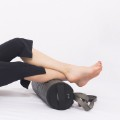
<img alt="Calves" class="media__image" src="http://i2.cdn.turner.com/cnnnext/dam/assets/150406123820-calves-large-169.jpg">Stave off soreness like a pro athlete
<img alt="" class="media__image" src="http://i2.cdn.turner.com/cnnnext/dam/assets/130114171227-fingerpainting-story-top.jpg">Could this prevent dementia?
These 'twins' are complete strangersCNN International
CEO: A woman shouldn't be presidentCNN International
Saudi Arabia executes second Indonesian maidCNN International
U.S. Navy testing swarm 'locust' dronesCNN International
The week in 40 photosCNN.com - World
Third suspect arrested in alleged Panama City gang rapeCNN International - US
These 'twins' are complete strangersCNN International
CEO: A woman shouldn't be presidentCNN International
Saudi Arabia executes second Indonesian maidCNN International
U.S. Navy testing swarm 'locust' dronesCNN International
The week in 40 photosCNN.com - World
Third suspect arrested in alleged Panama City gang rapeCNN International - US
My New Book Review: 'Should We Eat Meat?'Bill Gates
Top 10 Oldest Universities in the WorldTechlays.com
Students: Improve Memory, Instantly!Best Educational Info » Just another WordPress site
This Bullied Teen Will Wow You With Her…LOLWOT
My New Book Review: 'Should We Eat Meat?'Bill Gates
Top 10 Oldest Universities in the WorldTechlays.com
Students: Improve Memory, Instantly!Best Educational Info » Just another WordPress site
This Bullied Teen Will Wow You With Her…LOLWOT Recommended by
More from Health
<img alt="TO GO WITH AFP STORY &#39; Les enfants du sida, parias de la societe en Russie&#39; (FILES) This file picture taken 19 June 2006 shows a nurse holding a test-tube with HIV positive blood in an infectious diseases hospital in Moscow. About 330,000 people in Russia carry the virus, 50,000 of them aged between 15 and 19, and more than 1,500 babies born to HIV-positive mothers are given up every year. AFP PHOTO / MAXIM MARMUR (Photo credit should read MAXIM MARMUR/AFP/Getty Images)" class="media__image" src="http://i2.cdn.turner.com/cnnnext/dam/assets/140306102858-hiv-blood-test-story-top.jpg">HIV outbreak in Indiana grows
17°
International Edition
© 2015 Cable News Network. Turner Broadcasting System, Inc. All Rights Reserved.
Your annual physical is a costly ritual
'Fearless' Ebola nurse trains at Emory University
피스타치오, 오트밀, 연어, 아보카도, 요거트, 다크 코콜릿, 블루베리, 호박씨/해바라기씨, 캐슈넛, Turkey